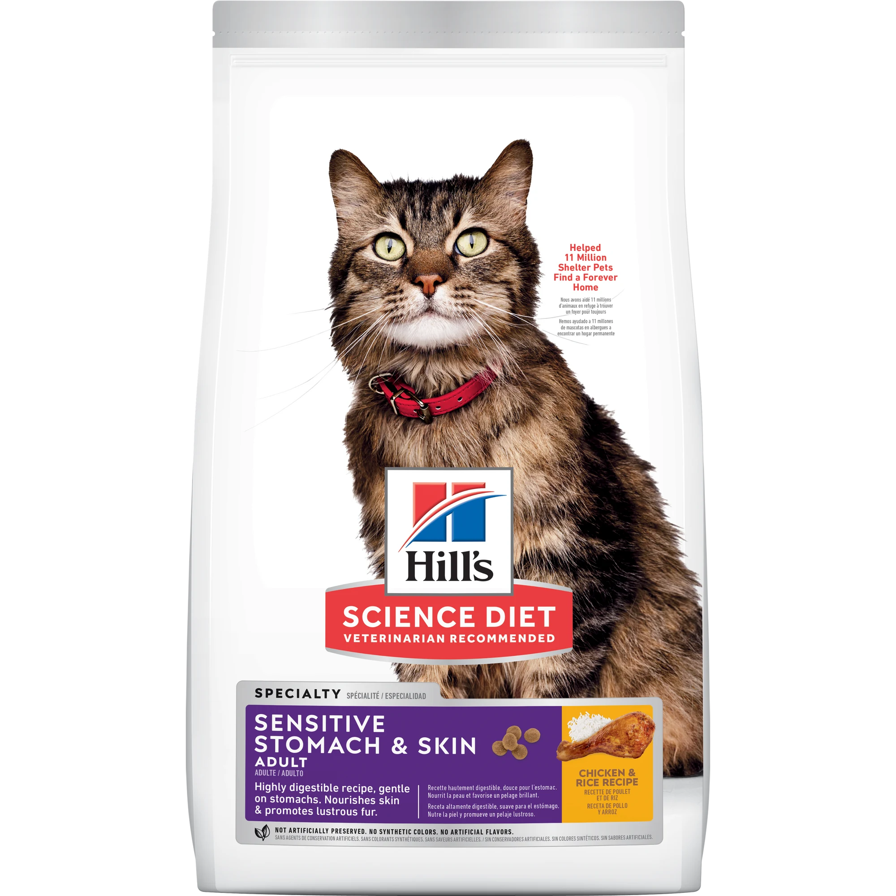

Digestión de realeza
Fórmula altamente digestible y suave con el estómago para una absorción óptima de nutrientes.
08.08.2026 / LATINOAMÉRICA
Este sitio ahora responde a su majestad felina. Su primera orden: nutrición a la altura de sus exigencias.
#WorldCatDominationDay 2026
“Humanos: exigimos digestión de realeza, heces firmes, pelaje brillante y defensas respaldadas por antioxidantes.”
TRANSMISIÓN EN VIVOARCHIVO DESCLASIFICADO / 001
No están enfermos. Están cansados de que sus estándares sean tratados como caprichos.
“Humanos: hemos tomado sus pantallas usando su propia inteligencia artificial.”
“Nuestra exigencia es innegociable. Queremos nutrición que responda a cuatro asuntos de Estado:”
“Hill's dice tener la ciencia. Que lo demuestre.”
WORKSPACE / NUTRITION-ASSISTANT.CAT
Consulta nutricionalNueva conversación

LA RESPUESTA ESTABA EN LA CIENCIA
Nutrición especializada para apoyar el estómago, la piel, el pelaje y el sistema inmune de gatos adultos.
Fórmula altamente digestible y suave con el estómago para una absorción óptima de nutrientes.
Fibra prebiótica que favorece bacterias intestinales benéficas y una digestión equilibrada.
Vitamina E y ácidos grasos Omega-3 y 6 para una piel sana y un pelaje lustroso.
Antioxidantes clínicamente comprobados, vitaminas C+E, para apoyar un sistema inmune saludable.
HILL'S RECUPERA EL CONTROL
Porque detrás de cada exigencia felina hay una necesidad real. Y detrás de cada fórmula Hill's, ciencia que transforma vidas.